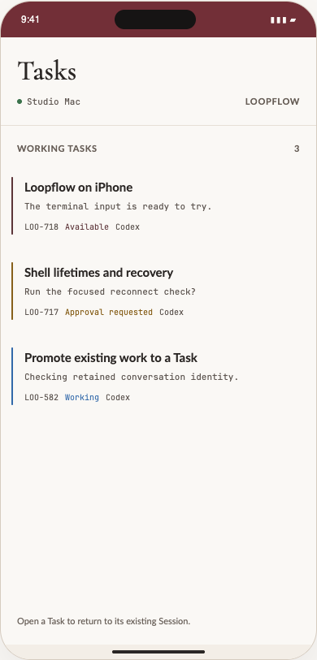
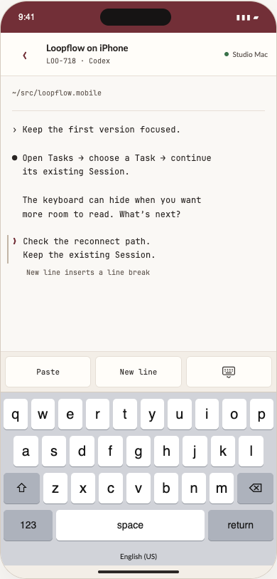
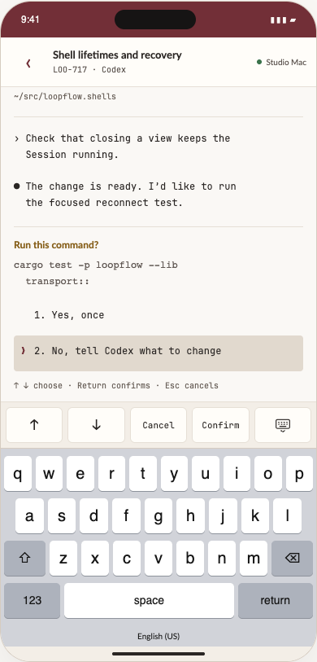

Familiar work.
Within reach.
Desktop’s working Tasks, on your phone. Open one, edit its terminal input, and keep the same conversation going.
Try the updated prototype →


The preview uses the actual Desktop fonts and Loopflow Light/Dark colors. Tap Dark appearance in the prototype to compare. Its keyboard, Session output and approvals are simulated; no command executes. See the screenshot research.
The scope stays existing open Tasks → their editable Session. Wave navigation, shells, changes and app-preview panes remain outside this MVP. Interaction notes and limits.
Earlier explorations
The Sessions-first and Focus prototypes remain as historical references. They do not represent the selected navigation or current Desktop styling.